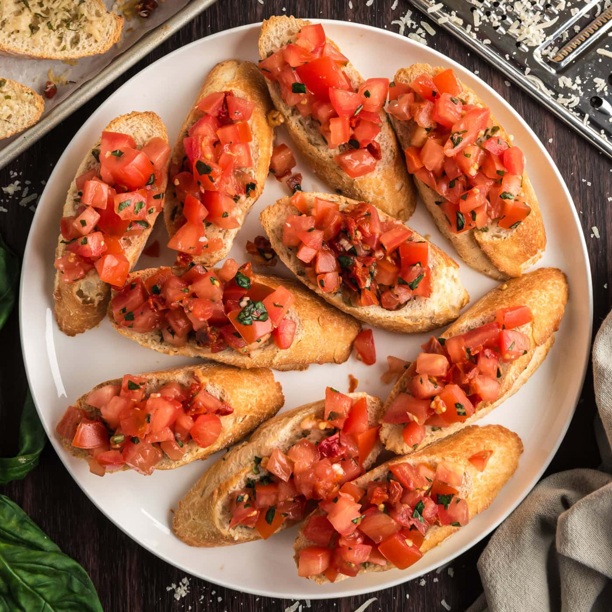

Bruschetta
Home

How to make Authentic Italian Bruschetta! The parmesan toasts take these over the top, and you will love the drizzle of balsamic glaze. I re-created this tomato bruschetta after trying it at one of my favorite restaurants, and it is always a crowd-pleaser.
Ingredients
- Roma Tomatoes are firmer and less juicy than other varieties, so they are ideal for bruschetta. Cherry tomatoes also work here.
- Basil - for best tasting results, use fresh basil leaves (not dried).
- Garlic - Authentic bruschetta has plenty of garlic! I use 4 cloves for the tomatoes and 1 clove for the toasts.
- Balsamic vinegar & Extra Virgin Olive Oil - add a rich layers of flavor to the tomato mixture.
- For the Toasts - you’ll need a baguette (or ciabatta bread loaf) and parmesan cheese, along with some of the garlic and oil you’ll reserve when preparing the tomato mixture.
- Balsamic Glaze - use this to drizzle over the top to serve the toasts. Balsamic Glaze works better than balsamic vinegar because it’s thicker for a prettier presentation and has a more concentrated flavor. Try it – it’s a game changer!
Steps
Bruschetta
- Dice your tomatoes – I love using a food chopper because it’s quick, easy, and makes even cuts. It’s also easy to drain the tomatoes of excess juice once they are diced and in the hopper. I don’t bother with seeding the tomatoes, but I do drain the excess juice so the mixture isn’t watery. Transfer the tomatoes to a large mixing bowl.
- Chop Basil – Basil is a delicate herb so be careful not to crush it. The best method for chopping basil is to Chiffonade – you want to chop it once and not go over it again, or the leaves will become bruised. How-to: Stack basil leaves and roll them into a tube. Using a sharp knife, thinly slice the basil into ribbons and transfer to the bowl with tomatoes.
- Mince Garlic – Finely mince your garlic cloves. Mix 1 tsp of minced garlic into 3 Tbsp olive oil and set aside to use for your toasts. Add the remaining minced garlic to the mixing bowl with your diced tomatoes.
- Season tomatoes with 2 Tbsp olive oil, 1 Tbsp balsamic, 1/2 tsp salt and 1/4 tsp black pepper. Stir gently to combine and set aside to let the flavors meld for 30 minutes or up to 2 hours.
Toasts for Bruschetta
- Slice Bread: Preheat the oven to 400˚F and cut your baguette into 1/2″ thick diagonal slices.
- Top & Bake – Use the garlic-infused olive oil that you set aside earlier and brush onto both sides of the baguette slices. Sprinkle with Parmesan cheese and bake at 400˚F for 5 minutes, then broil for 1-2 minutes until golden at the edges.